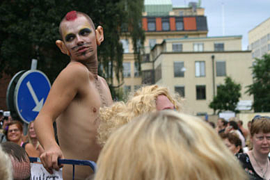

| 3. August 2003 |
Pekkas bilder från paraden
Thom

Foto: Pekka Koskenvoima
Danska DragPerformanceKultur...gruppen dunst, som tagit över Bøssehuset i Christiania var på besök i PridePark och paraden. Under WigStockholm skapade de en miniskandal genom att störa Rickard Engfors show och sedan slängas ut ur parken.
Reference:
http://qx.se/nyheter/artikel.php?artikelid=2538
Print denne side